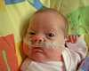
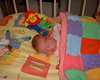
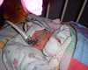

8th September 2001
Poppy is still doing very well off of CPAP, and it was eventually taken away this afternoon. She had a very good breast feed this afternoon and only had half of her normal feed from the tube. She seems to be waking a little more now. Her feeds have been changed to 70mls every 4 hours.
7th September 2001
Poppy has not needed CPAP support since 5am yesterday. She has had an active day, with a bath, two breast feeds and a bottle feed, but does not seem to be tiring. This is a huge step forward for us all and we are hoping that she continues to feel strong enough to breathe without support. Her oxygen requirements are still low too. Poppy now weighs 5lb 4oz
6th September 2001
Poppy stayed off of CPAP for 18 hours yesterday. She spent 5 hours on it again during the night. She seems to be coping very well and remains on very low oxygen requirements. Poppy actually woke up for a feed this morning, in between her morning and lunchtime feed, so she had a breastfeed.

5th September 2001
Poppy weighs 5lb. The fortifier which has been added to Sharon's milk to ensure strong growth, will not be added any more, as Poppy is a good size now. It was decided to take Poppy off of CPAP today and see how well she copes. She will be put on it again when she needs to be, but will be mostly off.

4th September 2001
Poppy is well and remains stable on the low-flow and CPAP. She continues to fight the CPAP a little though. Poppy had a good breastfeed today.
3rd September 2001
Poppy has had a pretty sleepy day today. She had a play on the floor with Sharon this morning, when she woke up for a little while. She can follow a toy with her eyes very well now and with a good deal of interest. Poppy's heart rate is much lower nowdays. Her heart rate is often 130bpm to 150bpm, which shows that she is more relaxed and less hardworking. This shows that she is stronger now.

2nd September 2001
Poppy weighs 4lb 14oz now. She had a very good breastfeed this evening and took only 20ml from her normal milk. She has had a few minor bradycardias today, but her heart rate has come up quickly and not caused too many problems with her oxygen saturation levels.